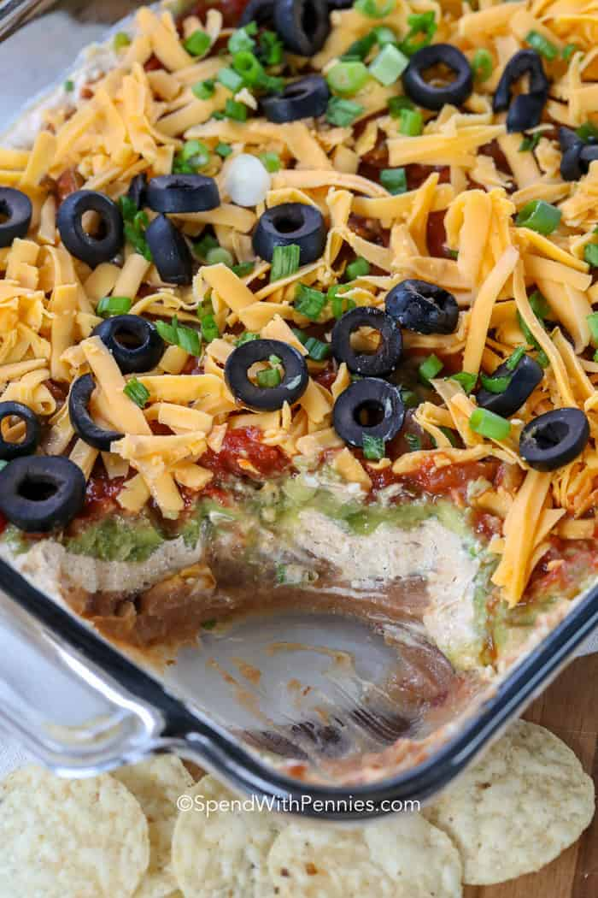

7 Layer Dip

Description
7 layer dip is one of the best party appetizers ever. Layers of fresh salsa, refried beans, guacamole, cheddar cheese, and our favorite toppings create a colorful addition to any spread.
Ingredients
- 1 1/4 cups salsa
- 16oz refried beans (canned)
- 2 Tbsp milk
- 8oz cream cheese (softened)
- 1/2 cup sour cream
- 2 Tbsp taco seasoning
- 1 cup guacamole (prepared)
- 1 1/2 cups cheddar cheese
- 1/2 cup black olives or tomatoes
- 4 sliced green onions
Steps
- Place salsa in a sieve to drain any liquid (this keeps your dip from getting runny).
- Place salsa in a sieve to drain any liquid (this keeps your dip from getting runny).
- Combine cream cheese, sour cream and taco seasoning with a mixer on medium. Spread over refried beans.
- Spoon guacamole over cream cheese and gently spread. Repeat with drained salsa.
- Top with cheese, olives/tomatoes and green onions.
- Chill 1 hour before serving. Serve with tortilla chips or crackers.